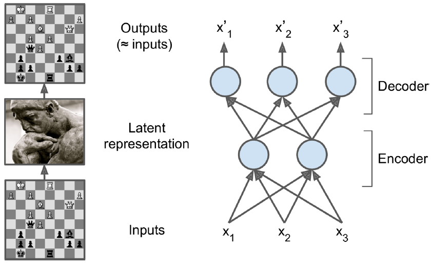
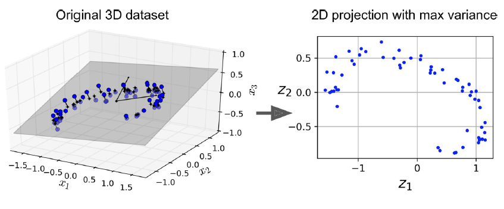
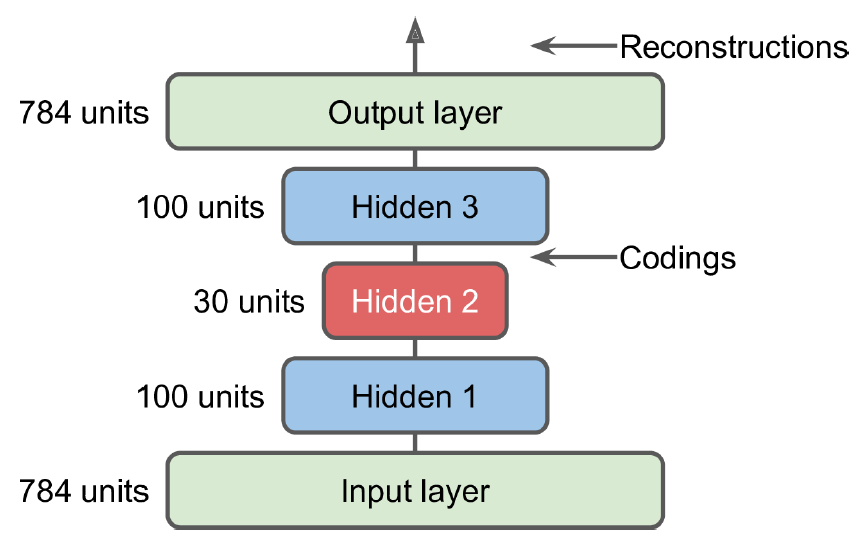

14.1 Autoencoders
Encode, decode, and reconstruct.
These notes walk through the lecture slides. The original deck is unchanged; use (slides) on the course hub if you want that PDF.
Figures and notes follow Géron, Hands-On Machine Learning; Deisenroth, Faisal, and Ong, Mathematics for Machine Learning; and Theodoridis, Machine Learning: A Bayesian and Optimization Perspective.
1. Representation learning
Autoencoders are neural nets that learn a dense latent representation (a coding) of unlabeled inputs.
The coding is usually much smaller than the input, so the same net is a dimensionality-reduction tool. It is also a feature detector, and it can pre-train a deeper net without labels.
Some autoencoders are generative: train on faces, then draw new faces. The net is trying to copy its input. A small coding, or noise, stops it from copying pixel-for-pixel, so the coding has to be an efficient summary. The identity map, under those constraints, is the goal.
2. Applications
| Use | What the coding is doing |
|---|---|
| Dimensionality reduction | Keep the signal; drop coordinates. Visualization and preprocessing. |
| Anomaly detection | Normal rows reconstruct well. Odd rows do not (fraud, security). |
| Feature learning | The coding is a feature vector for a later classifier or regressor. |
| Denoising | Train on noisy inputs, reconstruct the clean ones. |
| Generative modeling | VAEs and GANs reuse this encoder–decoder shape to draw new samples. |
3. Encoder, decoder, reconstruction
An autoencoder maps to a short coding, then maps that coding back to something that should look like . Two pieces: an encoder and a decoder.

The architecture is a multilayer net with one extra rule: the output layer has the same width as the input. The outputs are reconstructions. A reconstruction loss penalizes when it is not .
4. Loss functions
Which loss you use depends on what is.
Mean squared error (real-valued reconstructions):
where is the reconstruction.
Binary cross-entropy (binary data):
Categorical cross-entropy (one-hot rows, categories):
5. Linear autoencoders and PCA
A linear autoencoder has no activation functions. It compresses, then reconstructs. That is the same job as PCA: keep a low-dimensional summary that still explains variance.
PCA’s axes are orthogonal principal components. A linear autoencoder does not force orthogonality; with squared loss it still lands close to PCA. Add activations and it can follow nonlinear structure.

The slide sketch is a 3-to-2 encoder and a 2-to-3 decoder, trained with MSE and SGD. Both PCA and this linear net are unsupervised.
6. Stacked autoencoders
Give the net several hidden layers and it is a stacked autoencoder (a deep autoencoder). Extra layers buy more complex codings.
The usual picture is symmetric about the coding layer: wide, then narrow, then wide again. Deeper layers see more abstract features.

Practice
-
A linear autoencoder with squared loss is close to which classical method?
-
Why must the output layer have the same width as the input?
-
Name two uses of an autoencoder besides dimensionality reduction.